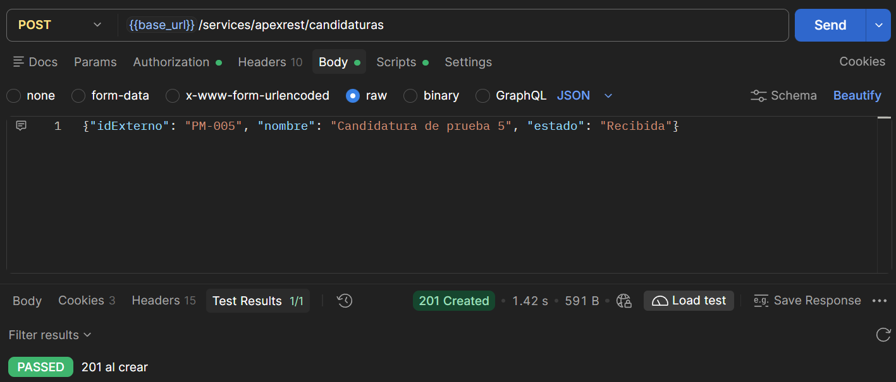
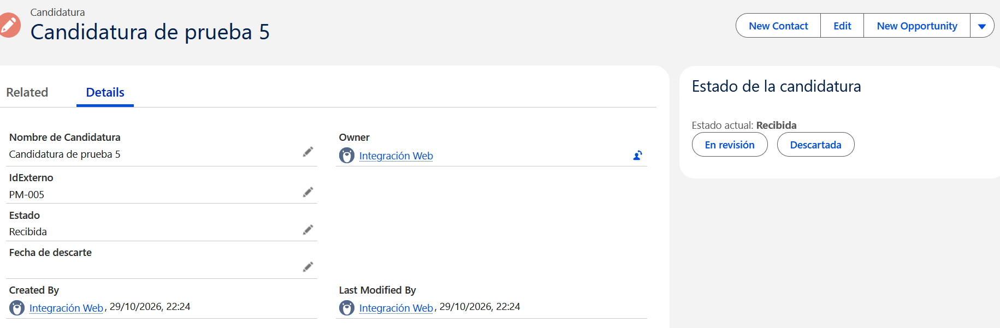
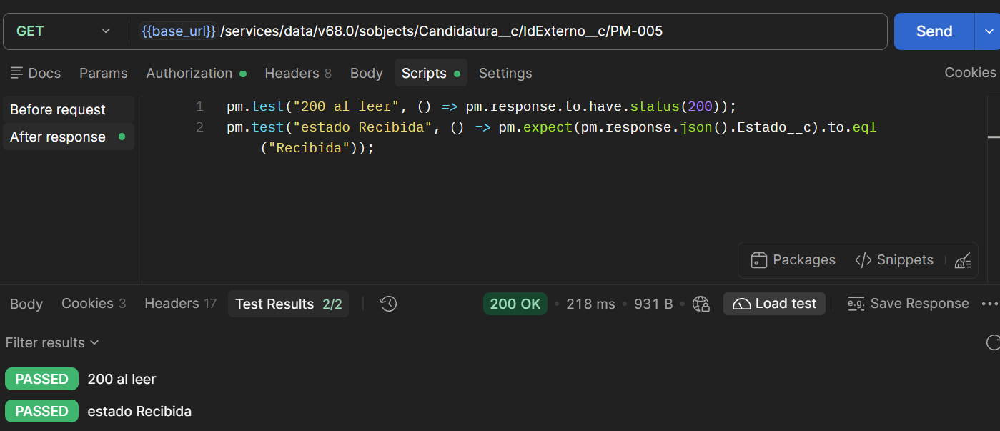
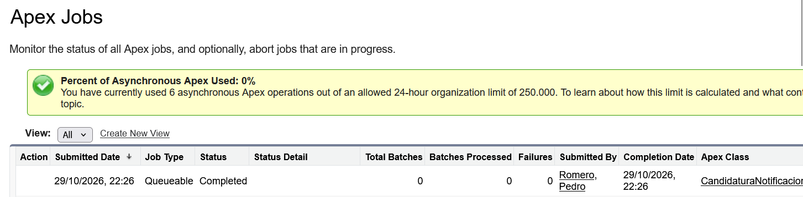
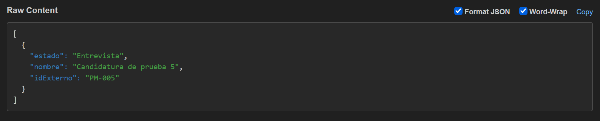

Proyecto personal · Salesforce
API de candidaturas en Salesforce
Recibe candidaturas por REST, valida sus cambios de estado y avisa a un sistema externo cuando una candidatura pasa a entrevista.
Problema
Las candidaturas llegan desde fuera por API. Cuando una pasa a Entrevista, otro sistema tiene que enterarse. Hay que evitar duplicados y cambios de estado que no tengan sentido.
Arquitectura

Decisiones y alternativas descartadas
API REST propia, no la API estándar. Descartada: API estándar. Motivo: hace falta idempotencia por idExterno y códigos 400 y 409 concretos. Con la API estándar, esa lógica quedaría en el sistema que llama.
Reglas de transición en el trigger, no en el endpoint. Descartada: validar en el endpoint. Motivo: la regla también se aplica a la edición desde la ficha y a cualquier otro origen.
Validar en before update, notificar en after update. Descartada: notificar en before. Motivo: after tiene el registro ya guardado. El callout no puede ir desde el trigger, así que va en un Queueable.
Un callout por lote. Descartada: un callout por registro. Motivo: con 200 registros, una sola petición. Coste: si falla, el lote entero se reintenta junto.
Finalizer para el reintento, no Schedulable. Descartada: Schedulable. Motivo: el reintento depende del resultado del job, no de un calendario. Coste: el reintento es inmediato (ver límites).
-
Crear por API
Postman envía un POST a
/services/apexrest/candidaturascon el identificador externo, el nombre y el estado. La API responde 201.
Creación desde Postman con el test de código 201 en verde. -
Comprobar en el registro
La ficha muestra el estado actual y solo los botones de las transiciones permitidas. Desde Recibida se puede pasar a En revisión o a Descartada.

Componente de estado en la ficha. -
Leer por identificador externo
Un GET con
IdExterno__cdevuelve el estado actual. Los tests comprueban el código de respuesta y el estado.
Lectura del registro con los dos tests en verde. -
Pasar a Entrevista
El trigger valida la transición y encola un Queueable con las candidaturas que acaban de entrar en Entrevista. La llamada externa se hace en el job, no en el trigger.

El job termina en Completed, sin fallos. -
Enviar el lote
Un único POST lleva todo el lote. Cada elemento tiene
idExterno,nombreyestado.
Cuerpo JSON recibido en el destino.
Límites conocidos
- Reintento inmediato. Si el destino sigue caído, el segundo intento falla igual.
- Fallo final sin registro. Solo queda en el debug log, que caduca. No hay forma de saber qué candidaturas no llegaron.
- Sin clave de idempotencia en el callout. Si el destino procesa el lote y la respuesta se pierde, puede duplicar allí.
- Timeout por defecto. El callout no define timeout explícito.
- Anonimización parcial. El batch cambia el nombre y deja IdExterno__c. Pendiente de confirmar si identifica a una persona.
Cada límite está en la auditoría del repositorio con su estado.
Documentación
- README decisiones, pasos de despliegue y límites de escalado. Leer en GitHub
- Colección Postman nueve peticiones con tests. Ver archivo